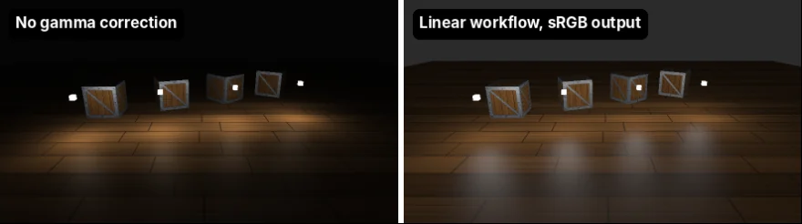

Advanced Lighting
Gamma Correction#
There is a mistake in every image we have rendered so far. Lighting math assumes that a value of 0.5 is half as bright as 1.0. On a display, it is not.
Displays are not linear#
Displays follow the sRGB standard, which is close to a power curve with an exponent of 2.2, called gamma. A pixel value of 0.5 is shown at about 0.5^2.2 ≈ 0.22 of full brightness. This is not a defect. Human vision is more sensitive to differences between dark tones than between bright ones, and the curve spends more of the 256 available steps on the dark end, where we notice them.
The consequence: image files are stored already encoded for this curve, and whatever we write to the screen is treated as encoded too.
What goes wrong#
If we do lighting directly on encoded values:
- Adding two lights does not double the brightness on screen.
- Gradients from light to dark fall off too fast, so shading has harsh, dark terminators.
- Colors shift toward oversaturation, and attenuation looks wrong.
The fix is a linear workflow: convert inputs to linear space, do all math there, and convert the result back to sRGB at the very end.
Metal does both conversions for you#
Pixel formats ending in _srgb tell Metal that a texture holds sRGB-encoded data:
- Sampling an sRGB texture returns linear values. The conversion happens before filtering, which is the correct order.
- Writing to an sRGB render target converts linear shader output to sRGB. Blending is also performed in linear space.
So gamma correction is two configuration changes and zero shader code.
1. Make the view's drawable sRGB:
view.colorPixelFormat = .bgra8Unorm_srgb
and use the same format in the pipeline descriptors that render to it.
2. Load color textures as sRGB:
let colorOptions: [MTKTextureLoader.Option: Any] = [.generateMipmaps: true, .SRGB: true]
let dataOptions: [MTKTextureLoader.Option: Any] = [.generateMipmaps: true, .SRGB: false]
diffuseMap = try loader.newTexture(URL: diffuseURL, options: colorOptions)
specularMap = try loader.newTexture(URL: specularURL, options: dataOptions)
normalMap = try loader.newTexture(URL: normalURL, options: dataOptions)
Only colors are sRGB
Textures that hold colors made by an artist looking at a screen are sRGB: diffuse, albedo, emissive. Textures that hold data are linear: normal maps, specular, roughness, metalness, height, ambient occlusion. Decoding a normal map as sRGB bends every normal and produces subtly wrong lighting that is hard to diagnose.
If you leave out the .SRGB option, the loader decides from the image file's metadata, which may or may not be what you want. Being explicit avoids surprises.
Doing it by hand#
If you cannot use an sRGB target, apply the curve at the end of the fragment function:
float3 encoded = pow(color, float3(1.0 / 2.2));
and decode textures on read with pow(texel, float3(2.2)). The automatic route is more accurate, since the true sRGB curve is not a pure power function, and it filters and blends correctly. Do one or the other, never both, or the image comes out washed out.
Constant colors#
Colors typed into code or picked in a color picker are sRGB values. In a linear workflow they should be converted before use:
func linear(_ srgb: Float3) -> Float3 {
Float3(pow(srgb.x, 2.2), pow(srgb.y, 2.2), pow(srgb.z, 2.2))
}
The view's clearColor is given in linear space when the drawable format is sRGB, so the same numbers now look brighter than before.
Attenuation#
Physically, light intensity falls with the square of the distance:
float attenuation = 1.0 / (distance * distance);
Without gamma correction this looks far too harsh, because the display's curve squares the falloff once more. That is why older tutorials use linear falloff or the three-term formula from Light Casters, which were tuned by eye on uncorrected output. With a linear workflow, inverse-square falloff looks right, and from here on we use it.
What to expect#
After the switch, the scene looks brighter and flatter in the mid-tones, and light and material values tuned earlier will need adjusting. This is normal. What you gain is lighting that adds up correctly, which every chapter from here to the end of the PBR section depends on.

Wide color#
Apple displays cover the Display P3 gamut, which is larger than sRGB. MTKView has a colorspace property (through its layer on iOS) and extended-range pixel formats such as .bgra10_xr_srgb for rendering colors outside sRGB. It is an advanced topic and unnecessary for learning, but good to know it exists when a designer asks why a red looks duller in your renderer than in Photos.